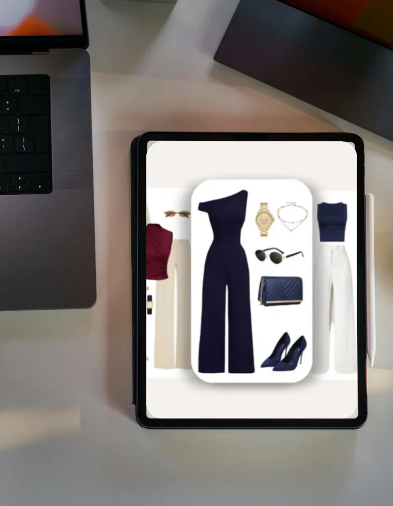

Lookbook digital : à quoi ça sert et comment l’utiliser au quotidien
Un lookbook digital personnalisé rassemble au même endroit votre direction de style, des idées de tenues et des pistes concrètes pour vos prochains achats. Bien pensé, il devient un outil que vous ouvrez le matin devant votre armoire, au moment où vous en avez besoin. Voici ce qu’il contient, à qui il s’adresse et comment le faire vivre au quotidien.
Un lookbook personnel, c’est quoi exactement ?
Dans l’univers de la mode, le lookbook est d’abord un outil de marque : une série d’images qui présente la collection d’une saison et montre comment porter les pièces. Le principe est le même qu’en marketing de la mode et en visual merchandising, deux domaines dans lesquels j’ai travaillé : associer des pièces et les mettre en scène pour aider à se projeter.
Un lookbook personnalisé reprend cette logique, en partant de vous. Il ne présente aucune collection. Il traduit votre personnalité, votre mode de vie et vos envies en images et en tenues concrètes. Les associations proposées tiennent compte de vos journées réelles, de vos contraintes et de ce dans quoi vous vous sentez bien.
Le format digital a un avantage simple : il vous suit partout. Sur votre téléphone, votre tablette ou votre ordinateur, il reste consultable en quelques secondes, dans une cabine d’essayage comme devant votre penderie.

Ce que contient un lookbook digital personnalisé
Dans mon accompagnement, le Lookbook Digital se construit en plusieurs étapes. Tout commence par un questionnaire préparatoire, puis un entretien individuel en ligne pour comprendre votre quotidien, vos goûts et ce que vous attendez de votre image. Viennent ensuite l’analyse de votre style personnel et les différents éléments du lookbook.
Une direction esthétique
C’est le fil conducteur. Elle résume en quelques mots et quelques images l’allure qui vous ressemble : épurée, graphique, romantique, décontractée, structurée… Cette direction sert ensuite de boussole pour tous vos choix, des vêtements aux accessoires.
Un moodboard personnalisé
Le moodboard style rassemble des images d’inspiration : matières, couleurs, silhouettes, ambiances. Il sert à visualiser l’univers dans lequel vous vous reconnaissez, sans chercher à copier une personne ou une tendance.
Des inspirations et des associations de tenues
C’est le cœur du lookbook : une sélection d’idées de tenues composées, qui montrent comment associer les pièces entre elles selon vos occasions. Une journée de travail, un week-end, un dîner, un événement : chaque moment de votre agenda peut trouver sa réponse.
Des suggestions de vêtements, d’accessoires et de styling
Vous recevez aussi des pistes concrètes : types de pièces, coupes, accessoires et petits gestes de styling. Rentrer un haut, retrousser une manche, superposer deux longueurs : ces détails transforment souvent une tenue que vous connaissez déjà.
À qui s’adresse le lookbook digital ?
Le lookbook convient particulièrement si vous vous reconnaissez dans l’une de ces situations :
- Votre armoire est bien remplie, mais vous avez l’impression de porter toujours les mêmes tenues.
- Vous aimez la mode, vous enregistrez beaucoup d’inspirations, et vous avez du mal à les traduire en tenues portables.
- Vous traversez une nouvelle étape : un nouveau poste, une reprise d’activité, une installation à Genève, un changement de rythme.
- Votre style est déjà là et vous souhaitez l’affiner plutôt que tout reprendre de zéro.
- Vous préférez un accompagnement en ligne, depuis chez vous.
Si votre priorité est de savoir quelles couleurs vous mettent en valeur, ou de revoir l’ensemble de votre image, d’autres formats répondent mieux à votre besoin. J’y reviens plus bas.
Lookbook Digital
Idéal pour affiner votre style et découvrir des inspirations concrètes à intégrer dans votre quotidien. 1 h 30 à 2 h · dès CHF 190.–.
Comment utiliser votre lookbook au quotidien
Un lookbook prend toute sa valeur quand il sert. Quelques habitudes simples suffisent pour en faire un réflexe.
Gardez-le à portée de main
Enregistrez-le sur votre téléphone, dans un album dédié ou dans vos favoris. Faites des captures d’écran de vos tenues préférées : vous les retrouverez en un geste, même sans connexion.
Planifiez vos tenues à l’avance
Avant une semaine chargée, prenez dix minutes pour choisir trois ou quatre tenues dans votre lookbook et les adapter à votre agenda. Le matin, la décision est déjà prise. C’est tout l’enjeu de la praticité : des choix plus rapides et une garde-robe qui simplifie le quotidien.
Faites-en votre liste de shopping
Le lookbook met en évidence les pièces qui reviennent souvent dans vos associations. Si l’une d’elles vous manque, notez-la. Vous savez alors précisément quoi chercher, ce qui limite les achats impulsifs et les dépenses inutiles.
Faites-le vivre au fil des saisons
À Genève, on passe vite d’une journée douce au bord du lac à un matin de bise. Reprenez vos associations à chaque changement de saison : la même direction esthétique se décline avec d’autres matières, des superpositions et d’autres longueurs. Pour organiser vos pièces de base, mon article sur la garde-robe capsule vous donne une méthode pas à pas.
Lookbook, colorimétrie ou conseil en image complet : que choisir ?
Les trois accompagnements se complètent. Le bon choix dépend de votre point de départ et de ce que vous souhaitez obtenir.
- La colorimétrie personnelle (en ligne, 1 h à 1 h 30, CHF 99.–) si votre question principale porte sur les couleurs : celles qui mettent naturellement en valeur votre teint, vos yeux, vos cheveux et votre contraste. Vous repartez avec une palette personnalisée à consulter au quotidien. Découvrir la colorimétrie personnelle.
- Le Lookbook Digital (en ligne, 1 h 30 à 2 h, CHF 190.–) si vous voulez affiner votre style et disposer d’inspirations concrètes, prêtes à intégrer dans votre quotidien. Voir le détail du Lookbook Digital.
- Le Conseil en image & style (2 à 3 h, CHF 320.– en ligne ou CHF 390.– en présentiel à Genève) si vous souhaitez un accompagnement global : objectifs d’image, colorimétrie personnelle, coupes, silhouettes et proportions, suggestions de vêtements et un guide personnalisé avec vos prochaines étapes. Découvrir le conseil en image.
Pour comparer en détail ce que comprend chaque formule, lisez aussi combien coûte un conseil en image à Genève.
Bien préparer sa séance
Un lookbook est d’autant plus juste que les informations de départ sont précises. Avant votre séance, vous pouvez :
- Répondre au questionnaire préparatoire avec franchise. Il n’y a ni bonne ni mauvaise réponse.
- Noter à quoi ressemble une semaine type : travail, sorties, sport, enfants, déplacements.
- Rassembler quelques images qui vous attirent, même si vous ne savez pas encore pourquoi.
- Repérer les pièces que vous portez le plus souvent et celles qui restent au placard.
Le jour de l’entretien, soyez simplement vous-même. L’objectif est de comprendre votre réalité pour construire un lookbook qui vous ressemble, sans jugement ni recettes toutes faites. Une fois le lookbook entre vos mains, vous gagnez du temps, vous achetez de façon plus réfléchie et vous composez vos tenues avec davantage de confiance.
Questions fréquentes
Quelle est la différence entre un lookbook digital et un moodboard ?
Le moodboard rassemble des images d’inspiration qui traduisent une direction esthétique. Le lookbook va plus loin : il propose des associations de tenues concrètes et des suggestions de vêtements, d’accessoires et de styling adaptées à votre quotidien.
Le lookbook digital se fait-il à distance ?
Oui. Le Lookbook Digital se déroule entièrement en ligne, pour une durée de 1 h 30 à 2 h, après un questionnaire préparatoire.
Combien coûte un lookbook digital personnalisé ?
Le Lookbook Digital est proposé à CHF 190.–. Il comprend le questionnaire, l’entretien individuel, l’analyse de votre style personnel, le moodboard et le lookbook digital personnalisé.
Faut-il racheter des vêtements après avoir reçu son lookbook ?
Pas nécessairement. Les suggestions servent de repère pour orienter vos prochains achats, à votre rythme. L’objectif est d’acheter de façon plus réfléchie, sans tout remplacer.

Olivia « Liv » Curty est conseillère en image & style à Genève. Diplômée en design de mode et forte de plus de 10 ans d’expérience dans la mode et le commerce de détail, elle accompagne chaque personne vers une image qui lui ressemble. En savoir plus